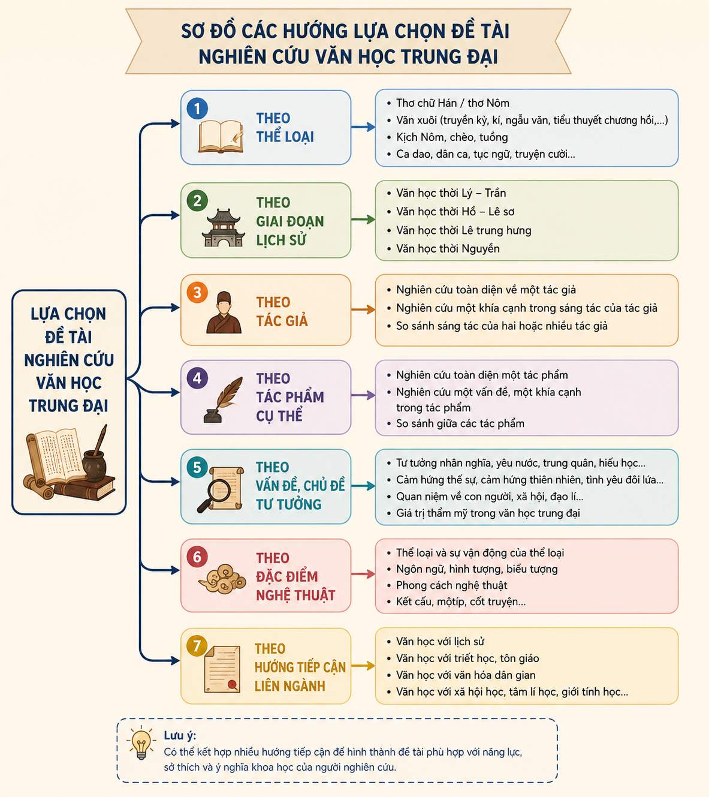

Lời dẫn nhập:
Làm thế nào để tiếp cận, giải mã và tiến hành nghiên cứu một vấn đề văn học trung đại Việt Nam đúng quy trình khoa học? Việc nắm vững từ bước chọn đề tài, xác định mục tiêu, thu thập tư liệu đến lập đề cương sẽ giúp học sinh phát triển năng lực tự học, tư duy phản biện và kĩ năng nghiên cứu văn học một cách bền vững.
Đề tài, vấn đề nghiên cứu cần xuất phát từ nội dung học tập trong chương trình, từ đó mở rộng và bước đầu đi sâu vào một khía cạnh cụ thể, tránh lựa chọn vấn đề quá rộng hoặc quá chuyên sâu.
Một số hướng lựa chọn đề tài chính:
Hình 1: Sơ đồ các hướng lựa chọn đề tài nghiên cứu văn học trung đại (file: h1.png)

Để xác định đề tài phù hợp, người nghiên cứu cần trả lời những câu hỏi quan trọng nào?
Mục tiêu cần rõ ràng, cụ thể, phù hợp và khả thi. Căn cứ vào mục tiêu để phân chia nội dung thành: Nội dung trọng tâm (hình thành luận điểm chính) và Nội dung liên quan.
Ví dụ nghiên cứu:
Với đề tài "Chất liệu văn học dân gian trong Truyện Kiều của Nguyễn Du", mục tiêu là làm rõ sự tiếp thu và sáng tạo nghệ thuật dân gian của Nguyễn Du.
Các phương pháp phổ biến bao gồm: Phương pháp nghiên cứu tiểu sử, văn học sử, phân tích tác phẩm, so sánh văn học cùng các thao tác khảo sát, thống kê, phân loại...
Bảng kế hoạch tiến độ chuẩn gồm 9 bước làm việc nhóm/cá nhân:
| STT | Hoạt động | Thời gian | Sản phẩm dự kiến | Phân công |
|---|---|---|---|---|
| 1 | Sưu tầm, phân loại tài liệu | 1 tuần | Phiếu khảo sát, bảng thống kê tài liệu | Cả nhóm |
| 2 | Đọc, tổng hợp, phân tích | 1 tuần | Các mẫu phiếu đọc tài liệu | Thành viên |
| 3 | Thống nhất đề cương | 1 buổi | Bản đề cương chi tiết | Nhóm trưởng điều hành |
| 4 | Hoàn thành hồ sơ tài liệu | 1 ngày | Danh mục tài liệu tham khảo & trích dẫn | Nhóm |
| 5 | Phân công viết báo cáo | 1 tuần | Bản phân công chi tiết công việc | Nhóm trưởng |
| 6 | Hoàn chỉnh báo cáo (Lần 1) | 3 ngày | Bản thảo báo cáo lần 1 | Đọc chéo sản phẩm |
| 7 | Điều chỉnh báo cáo | 3 ngày | Bản thảo chỉnh sửa lần 2 | Thư ký tổng hợp |
| 8 | Hoàn thành & nộp báo cáo | 1 ngày | Báo cáo hoàn chỉnh in ấn | Cả nhóm |
Khi làm việc nhóm để thực hiện báo cáo nghiên cứu văn học, thách thức lớn nhất là gì và giải pháp khắc phục?
Các công cụ tra cứu thiết yếu: Hán Việt từ điển, Từ điển văn học, Từ điển điển cố văn học, các tổng tập, hợp tuyển và tài liệu số chính thống.
Hình 2: Các loại từ điển và công cụ tra cứu văn học trung đại (file: h2.png)
Khi tra cứu điển cố văn học trung đại trong Truyện Kiều hay thơ Nguyễn Trãi, từ điển "Từ điển điển cố văn học" của Đinh Gia Khánh hay các công trình giải nghĩa Hán Việt là công cụ bất ly thân giúp giải mã chính xác hàm ý nghệ thuật của tác giả.
Tự xây dựng cho mình một thư viện số cá nhân dạng phiếu đọc (Reading Index Cards) trên ứng dụng ghi chú hoặc file Excel để lưu giữ ngữ liệu văn học phục vụ các bài viết báo cáo sau này.
Tránh trích dẫn sai nguyên văn hoặc sử dụng các bản dịch thơ chưa qua thẩm định uy tín. Luôn đối chiếu với các bản phiên âm Hán Nôm / văn bản chuẩn của Viện Văn học.
Quy chuẩn thể thức: Khổ giấy A4, độ dài 4 - 6 trang (không tính trang bìa, mục lục, phụ lục), font Times New Roman, cỡ chữ 14, dãn dòng 1.3 - 1.5 lines, lề trái 3cm, lề trên/dưới/phải 2cm.
Gồm: Tên trường THPT, Báo cáo nghiên cứu văn học trung đại Việt Nam, Tên đề tài, Người thực hiện, Giáo viên hướng dẫn, Địa điểm & Thời gian.
Mục lục, Danh mục bảng biểu, Mở đầu (Lý do, Mục tiêu, Đối tượng, Phương pháp), Nội dung chính (Các mục I, II, III), Kết luận, Tài liệu tham khảo, Phụ lục.
Trả lời đúng 10 câu hỏi để củng cố toàn bộ kiến thức bài học!
Bài tập Phân tích cấu trúc: Phân tích tính hợp lý của việc chia luận điểm cho đề tài "Hình tượng trăng trong thơ Nôm của Nguyễn Trãi".